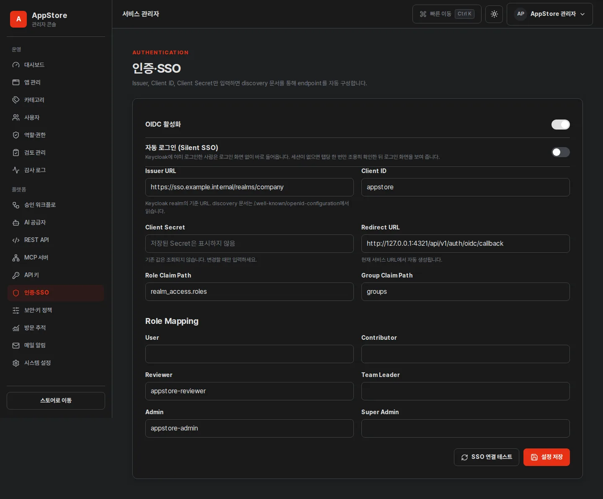
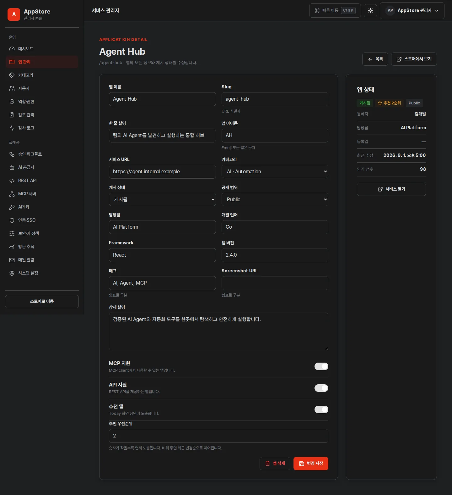
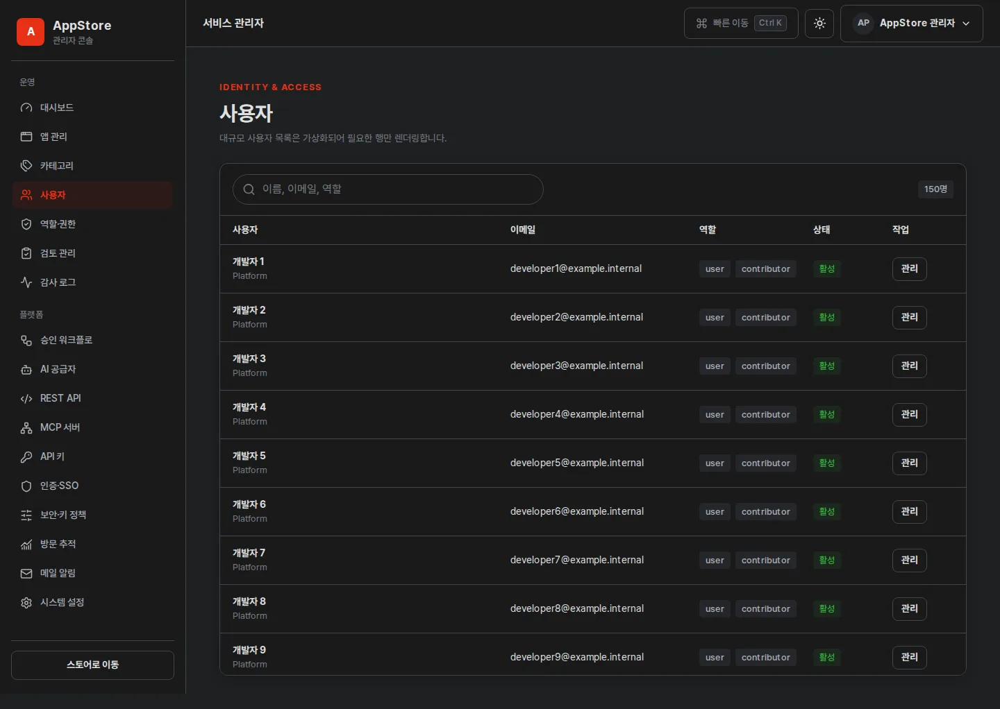

1. 최초 Bootstrap 관리자
OIDC가 아직 설정되지 않은 첫 실행에서는 BOOTSTRAP_ADMIN과 BOOTSTRAP_ADMIN_PASSWORD로 로컬 Super Admin을 준비합니다. 이 계정은 Keycloak 장애 시 복구 경로이므로 일상 계정으로 공유하지 않습니다.
- 네 환경변수를 준비합니다.
POSTGRES_DSN, 두 Bootstrap 값, 32-byteENCRYPTION_KEY를 설정합니다. - 상태를 확인합니다.
/health/ready가 200을 반환하면 마이그레이션과 초기화가 끝난 상태입니다. - Bootstrap 계정으로 로그인합니다.
초기 비밀번호를 조직의 승인된 고강도 값으로 관리하고 사용 기록을 감사 로그에서 확인합니다. - SSO와 역할을 구성합니다.
연결 시험이 성공한 뒤 별도 SSO Super Admin을 지정해 복구 계정 의존도를 낮춥니다.
ENCRYPTION_KEY를 변경하거나 잃으면 DB에 암호화된 OIDC·AI secret을 복호화할 수 없습니다. 데이터베이스 백업과 분리해 안전하게 보관하세요.2. 시스템과 서비스 URL
Admin → Settings에서 사이트 이름, 로고, favicon, 테마, 기본 언어, 페이지 크기, 공개 모드와 서비스 접속 URL을 설정합니다. 사용자에게 노출되는 실행 버튼은 이 URL 정책과 앱별 서비스 URL을 사용하며 Git 저장소 링크는 관리하지 않습니다.
- 서비스 URL은 사용자가 실제로 접근하는 HTTPS origin을 사용합니다.
- reverse proxy가 있다면 forwarded header 신뢰 범위를 proxy 주소로 제한합니다.
- 변경 후 로그인 redirect와 앱 실행 링크를 새 브라우저 세션에서 확인합니다.
- 사이트 로고와 화면 이미지는 폐쇄망에서 접근 가능한 로컬 자산만 사용합니다.
3. Keycloak OIDC 연결
{kind=link}

Keycloak에서 준비
- 표준 Authorization Code Flow를 허용하는 confidential client를 만듭니다.
- 관리 화면에 표시된 redirect URL을 Valid Redirect URIs에 정확히 등록합니다.
- 운영 서비스의 Web Origin과 post-logout redirect를 조직 정책에 맞게 제한합니다.
AppStore에서 입력
- Issuer URL: 예를 들어
https://sso.example.internal/realms/company처럼 realm까지 입력합니다. - Client ID와 Client Secret을 입력합니다. 저장 후 Secret은 가려지고 원문 조회 API가 제공되지 않습니다.
- SSO 연결 테스트를 실행해 discovery 문서 URL과 issuer, authorization, token, userinfo, logout, JWKS endpoint, PKCE 지원 여부를 확인합니다. 저장하기 전 화면에 입력한 Issuer URL을 그대로 시험하므로 값을 확정하기 전에 오타와 연결을 검증할 수 있습니다.
- 테스트가 성공한 뒤 OIDC를 활성화하고 새 private 창에서 로그인·로그아웃을 확인합니다.
/.well-known/openid-configuration을 사용합니다. authorization, token, userinfo endpoint를 각각 입력하지 않습니다.연결 테스트가 실패할 때
실패 메시지는 원인을 그대로 표시합니다. 아래 순서로 확인하세요.
- 연결하지 못했습니다: 폐쇄망에서 AppStore container가 Keycloak host와 통신 가능한지, TLS 인증서를 신뢰하는지 확인합니다.
- HTTP 404: realm 경로가 틀렸습니다. Issuer는 realm까지 포함해야 하며
/.well-known/...은 붙이지 않습니다. - 필수 항목이 없습니다: 응답이 discovery 문서가 아닙니다. reverse proxy가 로그인 화면이나 오류 페이지를 대신 반환하고 있는지 확인합니다.
- issuer가 다릅니다: Keycloak이 내부 hostname으로 issuer를 발행하고 있습니다. Keycloak의 frontend URL(
KC_HOSTNAME)을 사용자에게 노출되는 주소로 맞춥니다.
4. 역할과 권한 매핑
Keycloak 역할 이름을 코드에 고정하지 않습니다. Role Claim Path, 선택적 Group Claim Path와 AppStore 역할별 외부 값을 설정합니다.
| AppStore 역할 | 권장 책임 | 예시 외부 역할 |
|---|---|---|
| User | 개인화와 공개 조회 | appstore-user |
| Contributor | 앱 등록과 소유 앱 수정 | appstore-contributor |
| Reviewer | 검토·승인·반려 | appstore-reviewer |
| Team Leader | 팀 기반 승인 | appstore-manager |
| Admin | 운영 설정과 사용자 관리 | appstore-admin |
| Super Admin | 보안·인증·전체 관리 | appstore-super-admin |
매핑 저장 후 각 역할의 시험 계정으로 /submit, /review, /admin을 확인합니다. 403은 로그인 실패가 아니라 권한 거부이므로 401과 구분해 기록합니다.
5. 선택형 승인 Workflow
기본값은 OFF입니다. 별도 설정이 없으면 등록 즉시 게시하며 검토·승인·반려 UI를 업무 흐름에 끼워 넣지 않습니다.
| 설정 | 결정 기준 |
|---|---|
| 승인 활성화 | 규제·품질 검토가 필요한 조직에서만 ON |
| 승인 단계 | 기본 1단계, 책임 분리가 필요한 경우 다단계 |
| Reviewer·Team Leader | Role 또는 Group 매핑으로 지정 |
| 자동 게시 | 최종 승인 직후 게시 여부 |
| 반려 사유 | 수정 가능성을 높이려면 필수 권장 |
| 자체 승인 금지 | 등록자와 승인자 분리가 필요하면 ON |
설정 변경은 새 제출부터 적용되는지, 기존 검토 건에도 적용되는지 운영 공지에 명시하고 Audit Log에서 before/after를 확인합니다.
contributor가 되어 누구나 앱을 제출할 수 있고, 게시 전에 검토를 거칩니다. OFF일 때는 제출이 곧 게시이므로 기본 역할이 조회 위주의 user로 유지되고 등록 권한은 별도 역할 매핑으로만 부여합니다. 기존 사용자는 다음 SSO 로그인 시 새 기본 역할이 반영됩니다.6. Key 정책과 권한 템플릿
Admin → API Keys / Security에서 사용자별 최대 Key 수, 기본 만료일, 회전 Grace Period, 미사용 만료와 강제 회전을 설정합니다.
- 권한 정의는
apps:read,apps:write,ai:use,mcp:read처럼 업무 행위 단위로 유지합니다. - Read Only, Developer, AI Client, MCP Client 등의 템플릿을 만들어 최소 권한 발급을 돕습니다.
- Key 원문은 생성 순간 한 번만 보여 주며 DB에는 prefix와 keyed hash만 저장합니다.
- 회전·폐기·권한 변경은 actor, 대상, 시각과 Request ID를 Audit Log에 남깁니다.
7. AI Provider와 256K token
OpenAI-compatible, vLLM, Ollama 또는 Custom provider의 내부 Base URL, API Key, 모델과 제한을 설정합니다. API Key는 ENCRYPTION_KEY로 암호화되고 화면에는 mask만 표시됩니다.
| 값 | 운영 원칙 |
|---|---|
| Context Window | 모델 전체 context 범위. 최대 262144를 Number Input으로 저장 |
| Max Input Tokens | 입력에 허용할 조직 정책 한도 |
| Max Output Tokens | Provider와 모델이 실제 지원하는 출력 한도 이하 |
| Streaming | 기본 ON. 변경은 호환성 예외일 때만 |
| Timeout·Retry | 긴 streaming 연결과 중복 생성 비용을 함께 고려 |
Provider limit과 모델 limit을 별도로 설정해 256K 값을 지원하지 않는 upstream에 강제로 보내지 않도록 합니다. 연결 시험에서는 첫 chunk, heartbeat, usage, finish, 오류와 client cancel 전달을 확인합니다.
8. REST API와 MCP 정책
REST API
API 활성화, 익명 조회, rate limit과 Key permission을 관리합니다. 버전 경로는 /api/v1, OpenAPI는 /openapi.json과 /docs에서 제공합니다.
MCP
/mcp 활성화, 익명 조회, rate limit과 tool permission을 설정합니다. 익명 사용자는 조회 tool만, 인증 사용자는 자신의 앱 tool, 관리자는 운영 tool을 볼 수 있도록 최소 노출을 유지합니다.
설정 변경 뒤 익명 요청, read-only Key, Contributor Key, Admin Key로 tool 목록과 실행 거부를 각각 시험합니다.
9. 앱 카탈로그 관리
{kind=link}

/admin/apps에서 이름·설명·태그 검색, 게시 상태, MCP 지원과 정렬로 카탈로그를 좁힙니다. 조건은 URL에 유지됩니다.- 목록의 상태 select는 게시 상태만 즉시 바꿉니다. 나머지 정보는 상세 · 수정에서 편집합니다.
- 상세 화면에서 이름, Slug, 설명, 서비스 URL, 카테고리, 담당팀, 태그, 스크린샷, MCP·API 지원, 공개 범위, 게시 상태와 추천 노출을 한 번에 저장합니다.
- 게시를 멈추기만 하려면 상태를 보관됨으로 바꿉니다. 카탈로그에서 사라지지만 기록은 남습니다.
- 앱 삭제는 영구 삭제입니다. 확인 대화 상자를 거치며 즐겨찾기, 검토 이력과 버전 기록이 함께 삭제됩니다. 모든 수정과 삭제는 Audit Log에 남습니다.
10. 사용자, 메뉴와 Audit Log
{kind=link}

- 사용자 목록은 대량 데이터에서 virtualization을 사용하고 8px theme-aware scrollbar를 제공합니다.
- 역할 변경 전 대상 계정, 요청 근거와 최소 권한을 다시 확인합니다.
- Login, App 변경, 승인·반려, Key 수명주기, 역할과 설정 변경을 Audit Log에서 조회합니다.
- 관리자에게도 Audit Log 삭제 기능을 제공하지 않는 정책을 유지합니다.
/admin/users에서 새로고침해도 동일 메뉴, 필터와 페이지가 유지되는지 릴리스마다 확인합니다.
11. 운영 전 보안 점검
- Bootstrap과 SSO Super Admin을 서로 다른 승인된 계정으로 관리합니다.
- OIDC·AI Secret이 재조회되지 않고 변경만 가능한지 확인합니다.
- 공개 API와 익명 MCP가 조직 정책대로 OFF 또는 최소 조회인지 확인합니다.
- 서비스 URL, OIDC redirect와 logout URL이 운영 HTTPS origin만 허용하는지 확인합니다.
- PostgreSQL 백업과
ENCRYPTION_KEY복구 절차를 별도로 시험합니다. - 관리자·일반 사용자·익명 세션으로 200, 401, 403 경계를 검증합니다.